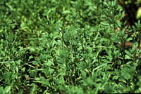
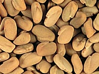

What is Fenugreek
Fenugreek (Trigonella graecum) is a leguminous spice crop.
The name comes from Foenum-graecum, meaning Greek Hay. Most cattle like the flavour of
Fenugreek in their forage. The plant was often used to improve the smell of poor hay and make it more pallatable for
the animals.
Why is it produced?
One of the oldest known medicinal plants, use of Fenugreek dates back to the ancient Egyptians
and Hippocrates. The bitter-sweet seed is used as a popular folk remedy for sore throats and colds.
Fenugreek seeds, which are available whole and ground, are used to flavour
curry powders, spice blends and teas and several other foods. It is used for imitation maple syrup flavoring.
Its leaves (rarely available) can be used in salads.
Where is it produced?
The plant is native to southern Europe and Asia and is well
adapted to dryland conditions in the Dark Brown and Brown soil zones.

What does fenugreek look like?
It is an erect annual herb, growing about 2 feet high, similar to alfalfa (trifoliate)
White flowers appear in early summer and develop into pods that are long, narrow and sickle-shaped.
Each pod contains 10-20 seeds.
The seeds contain about 5 per cent of a strong-smelling, bitter oil, which can be
extracted by ether; 22 per cent proteids; a volatile oil; two alkaloids, Trigonelline and Choline,
and a yellow colouring substance. The chemical composition is similar to that of that of cod-liver oil.
It is rich in iron, phosphates, lecithin and nucleoalbumin. Also contained in the seeds
is diosgenin (0.1 - 0.2 percent) which is used
for cortisone preparations and synthesis of other hormones.
How is it produced?
Fenugreek likes hot and dry conditions. It may be grown on a fairly wide range of soils,
but is best adapted to well-drained rich soils. Growth is slow and weak in cold temperatures and wet soils.
The plant is a legume and requires little or no nitrogen fertilizer. It can actually improve the nitrogen status of the soil.
There is very limited production of this crop at present but contracts are available.
|